TRIP OVERVIEW
Day 1 – Sé de Lisboa · Convento do Carmo · Praça do Comércio · Alfama
Day 2 – Mosteiro dos Jerónimos · Padrão dos Descobrimentos · Torre de Belém · MAAT
Day 3 – Castelo de São Jorge · Mouraria · Miradouro da Graça · Senhora do Monte
Day 4 – Bairro Alto · Igreja de São Roque · Chiado · Príncipe Real
Day 5 – Oceanário de Lisboa · Parque das Nações · Gare do Oriente · Telecabine Lisboa
Day 6 – Cais do Sodré · Santa Catarina · LX Factory · Pilar 7
Day 7 – Museu Nacional do Azulejo · Marvila
Day 8 – 🚆 Train Day — Setúbal
Day 1
🏨 From Hotel: 🚕 15 min → Sé Cathedral
1. Sé de Lisboa
↳ Portugal's oldest cathedral, built in 1147 on the site of the Moors' main mosque. Romanesque façade and twin towers; the 1755 earthquake damaged the interior. Entry includes the Gothic cloisters and a treasury with medieval reliquaries.
🏛️ Tuesday - Sunday 10:00am - 6:00pm
🚫 Closed Monday
⏰ ~45 min
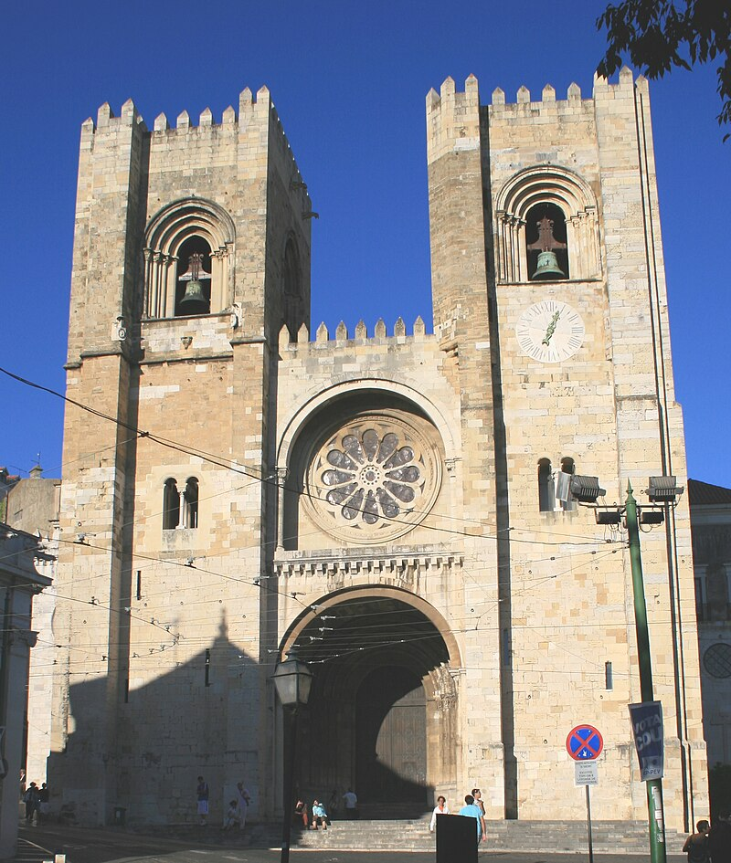
🚶 15 min · 🚕 6 min → Carmo Convent
2. Convento do Carmo
↳ Gothic monastery · 1389 devastated by the 1755 earthquake — the nave roof collapsed, leaving a roofless skeleton open to the sky. Skeletal arches shelter the Museu Arqueológico do Carmo: mummies, pre-Columbian artefacts, and Roman stones.
🏛️ Monday - Saturday 10:00am - 6:00pm
🚫 Closed Sunday
⏰ ~1h
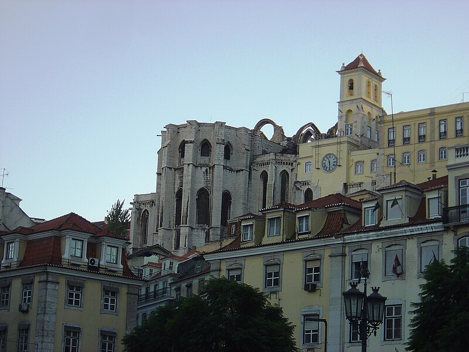
🚶 5 min · 🚕 2 min → Praça do Comércio
3. Praça do Comércio
↳ Lisbon's grand riverside square, rebuilt after 1755 on the site of the Royal Palace. Three sides are Pombaline arcades in ochre and white; the fourth opens onto the Tagus via the Cais das Colunas steps.
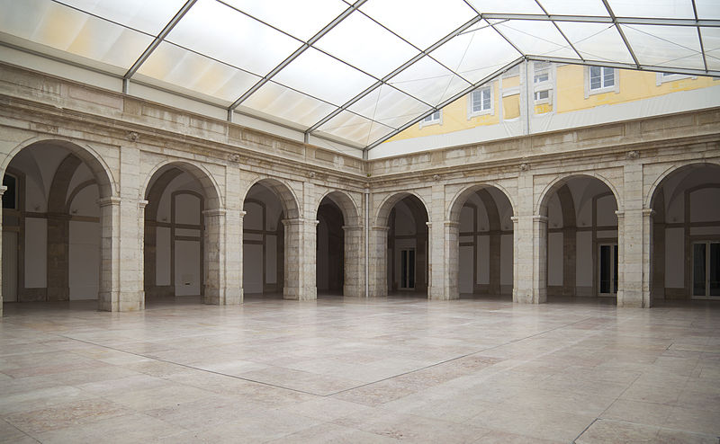
🚶 8 min · 🚕 3 min → Alfama
4. Alfama
↳ Lisbon's oldest neighbourhood — a Moorish maze of alleys from the castle hill to the river. Survived 1755 largely intact, preserving a medieval street pattern unique in Western Europe. Fado was born here.
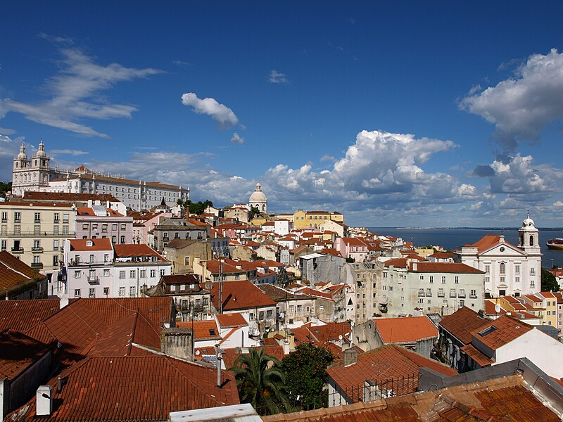
🚕 15 min → hotel
Day 2
🏨 From Hotel: 🚕 22 min → Jerónimos Monastery
1. Mosteiro dos Jerónimos
↳ Finest Manueline monument — built early 1500s near Vasco da Gama's India launch point. Ornate cloisters and vaulted church intact; church holds tombs of Vasco da Gama and Camões. Pastéis de Belém bakery · since 1837 is next door.
🏛️ Tuesday - Sunday 10:00am - 5:30pm
🚫 Closed Monday
⏰ ~1.5h
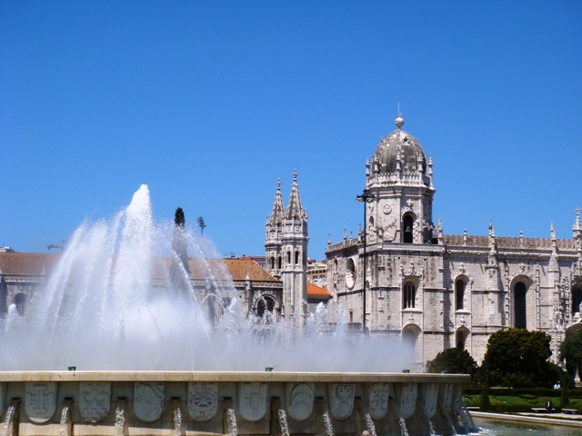
🚶 6 min · 🚕 2 min → Padrão dos Descobrimentos
2. Padrão dos Descobrimentos
↳ A 52-metre monument built in 1960 for the 500th anniversary of Henry the Navigator's death. Carries stone effigies of 33 explorers and poets, Henry at the bow. Terrace at top has views across Belém.
🏛️ Daily 10:00am - 7:00pm
⏰ ~45 min
🚶 8 min · 🚕 2 min → Belém Tower
3. Torre de Belém
↳ Manueline fortification at the Tagus mouth, built 1515–1521 as the ceremonial gateway for the Voyages of Discovery. Limestone façade with rope motifs and armillary spheres — Portugal's most intricate Manueline stonework. UNESCO Site.
🏛️ Tuesday - Sunday 10:00am - 5:30pm
🚫 Closed Monday
⏰ ~45 min
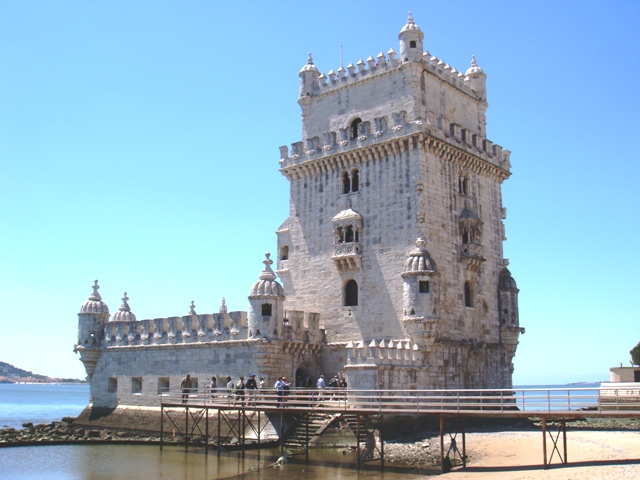
🚶 6 min · 🚕 2 min → MAAT
4. MAAT
↳ Riverside museum in 15,000 crackle-glazed ceramic tiles by Amanda Levete, opened 2016 alongside a restored power station. The Museum of Art, Architecture and Technology spans both buildings. Rooftop entry is free.
🏛️ Wednesday - Monday 10:00am - 7:00pm
🚫 Closed Tuesday
⏰ ~1.5h
🚕 22 min → hotel
Day 3
🏨 From Hotel: 🚕 15 min → Castelo de São Jorge
1. Castelo de São Jorge
↳ 11th-century Moorish fortress captured in 1147, royal residence for four centuries. Walkable battlements offer the best 360° panorama in Lisbon — Alfama, the Tagus, and the Ponte 25 de Abril. Arrive at opening time to beat the queues.
🏛️ Daily 9:00am - 9:00pm
⏰ ~2h
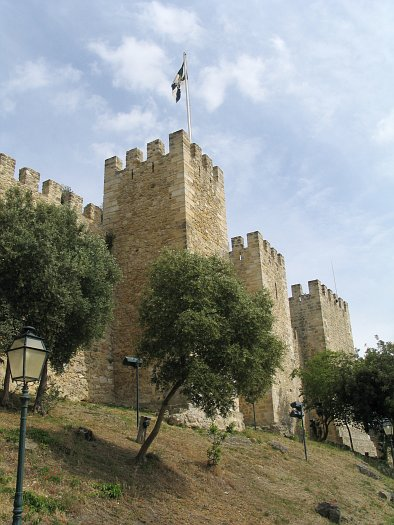
🚶 14 min · 🚕 7 min → Mouraria
2. Mouraria
↳ Lisbon's old Moorish quarter — a warren of alleys between the castle and Graça, home to fado's roots. Tiled tabacarias, community gardens, the Intendente market square, and street art layered over Moorish walls. Quieter and more local than Alfama.
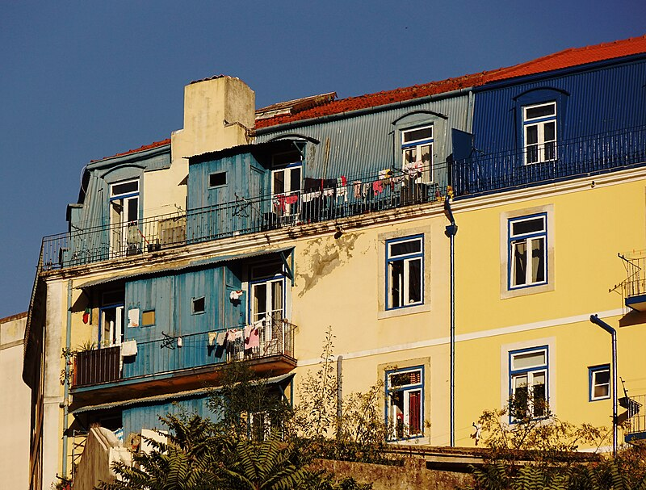
🚶 10 min · 🚕 4 min → Miradouro da Graça
3. Miradouro da Graça
↳ Open-air platform atop Lisbon's highest hill with views of São Jorge Castle, Alfama rooftops, and the Tagus. Graça draws locals rather than tourists. Best vantage for morning light over the castle and the best sunset spot on the hill.
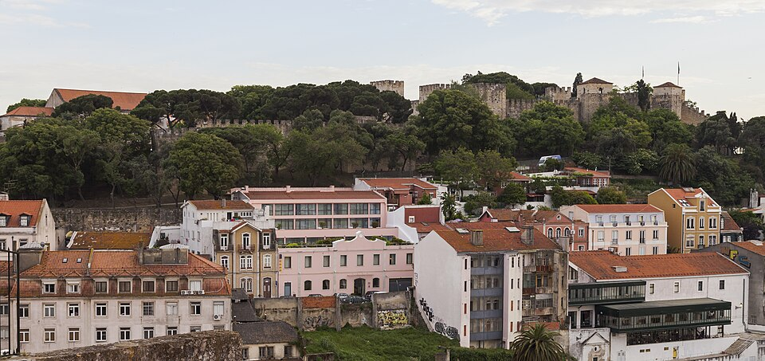
🚶 6 min · 🚕 2 min → Miradouro da Senhora do Monte
4. Miradouro da Senhora do Monte
↳ Lisbon's highest miradouro — a chapel-side terrace in Graça with a 270° view from the castle and Alfama to the Ponte 25 de Abril. Almost entirely locals: few tourists make the climb. Benches fill at dusk as the Tagus turns gold.
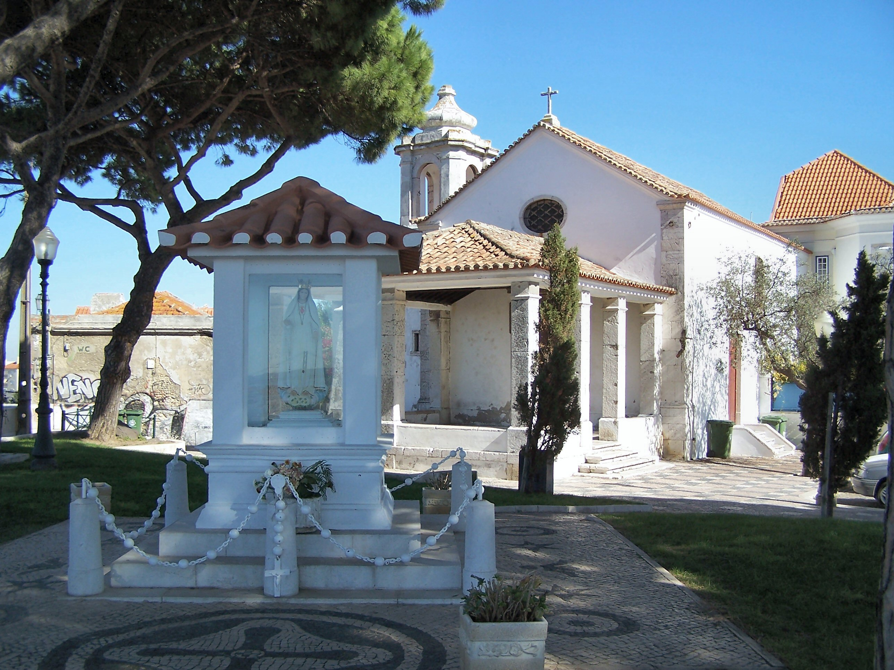
🚕 13 min → hotel
Day 4
🏨 From Hotel: 🚕 13 min → Bairro Alto
1. Bairro Alto
↳ Lisbon's bohemian hillside neighbourhood — a 16th-century grid of narrow streets lined with vintage shops, tascas, and fado houses. Unhurried by day with boutique browsing and neighbourhood lunch spots. One of Lisbon's oldest residential quarters and the birthplace of fado culture.
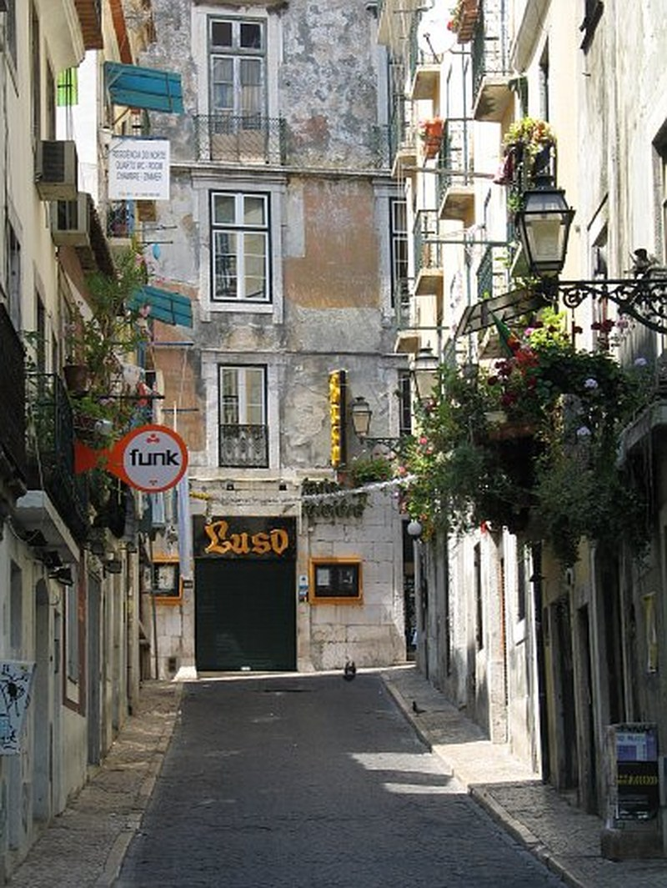
🚶 4 min · 🚕 7 min → Igreja de São Roque
2. Igreja de São Roque
↳ Plain Mannerist façade hiding eight ornate side chapels. The standout is the Chapel of São João Baptista: commissioned by King João V, built in Rome from lapis lazuli, agate, porphyry, and ivory, consecrated by the Pope, then dismantled and shipped to Lisbon in 1747.
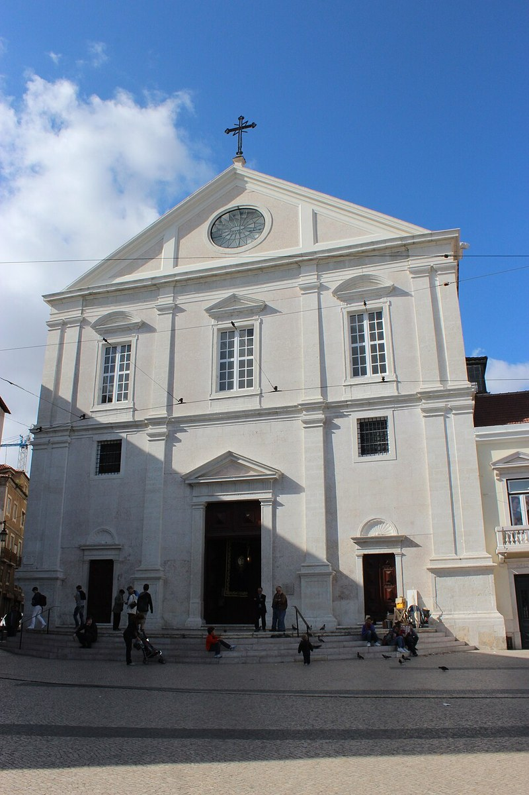
🚶 5 min · 🚕 7 min → Chiado
3. Chiado
↳ Lisbon's literary and cafe district. Rua Garrett climbs from Baixa to Largo de Camões, lined with the Bertrand bookshop · 1732, the world's oldest operating bookshop, Café A Brasileira where Fernando Pessoa drank his bicas, and elegant 18th-century facades rebuilt after the 1988 fire.
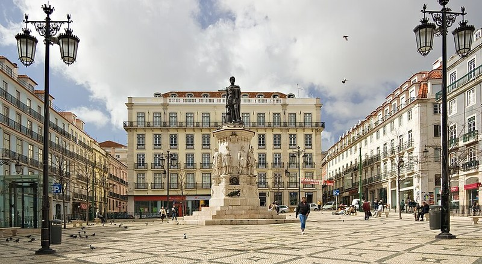
🚶 17 min · 🚕 5 min → Príncipe Real
4. Príncipe Real
↳ Lisbon's most sophisticated neighbourhood — concept-store boutiques and shaded terraces around the Jardim do Príncipe Real. The leafy garden square hosts a weekend fair; the Natural History Museum is a short walk away.
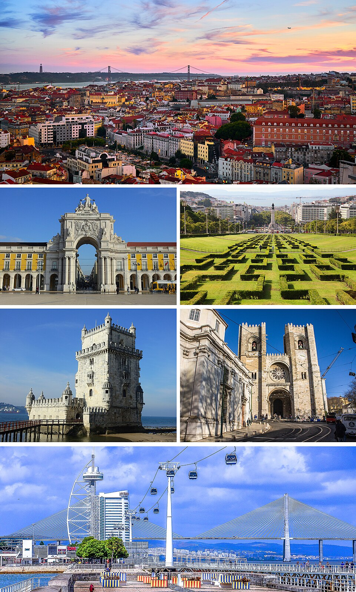
🚕 11 min → hotel
Day 5
🏨 From Hotel: 🚕 20 min → Oceanário de Lisboa
1. Oceanário de Lisboa
↳ One of Europe's largest aquariums, built for Expo '98 with 1 million litres and a central ocean tank visible from four habitats. The structure appears to float on the Tagus. Sea otters and jellyfish gallery are highlights; book online.
🏛️ Daily 10:00am - 8:00pm
⏰ ~2h
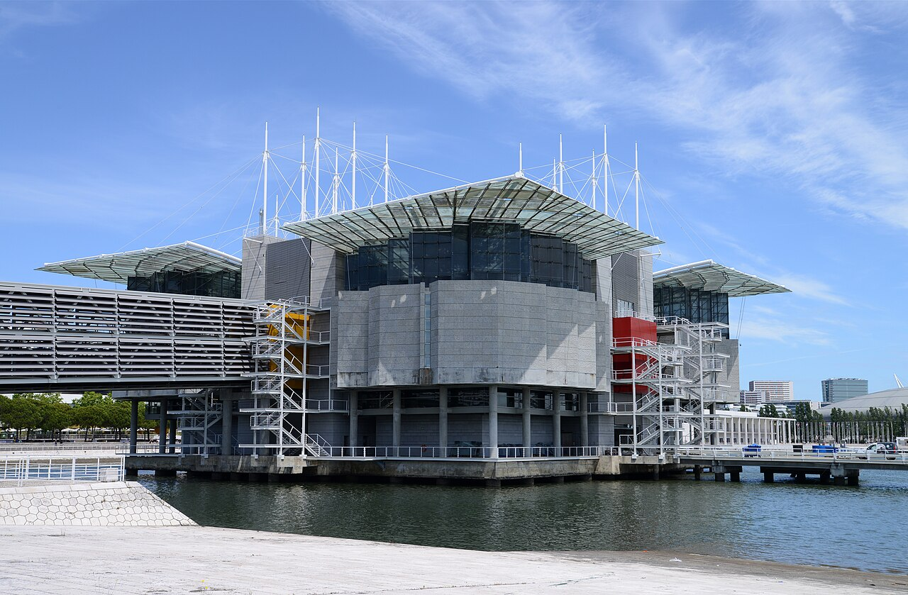
🚶 20 min · 🚕 7 min → Parque das Nações promenade
2. Parque das Nações
↳ Modern riverside district built for Expo '98 on reclaimed industrial land. The promenade along the Tagus opens up clear views of the Vasco da Gama Bridge — Europe's longest bridge at 17.3 km. Passes the Portugal Pavilion by Álvaro Siza Vieira, Gare do Oriente, and a waterfront cable car.
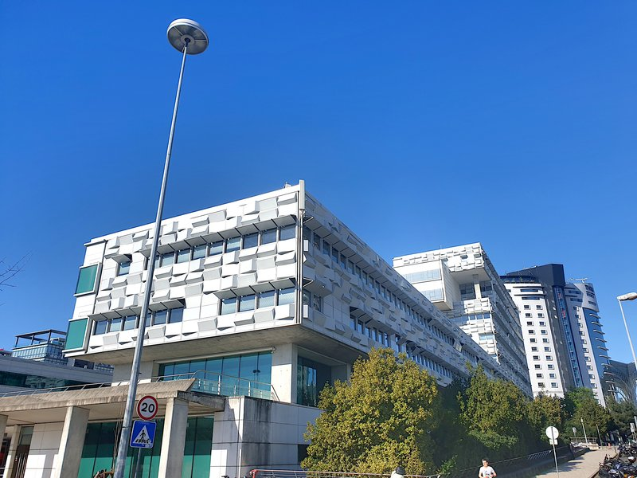
🚶 12 min · 🚕 4 min → Gare do Oriente
3. Gare do Oriente
↳ Designed by Santiago Calatrava for Expo '98, the soaring steel-and-glass canopy casts forest-like shadows across the platforms. Lisbon's main intercity rail hub — trains to Porto, Faro, and Madrid — plus metro and bus terminal.
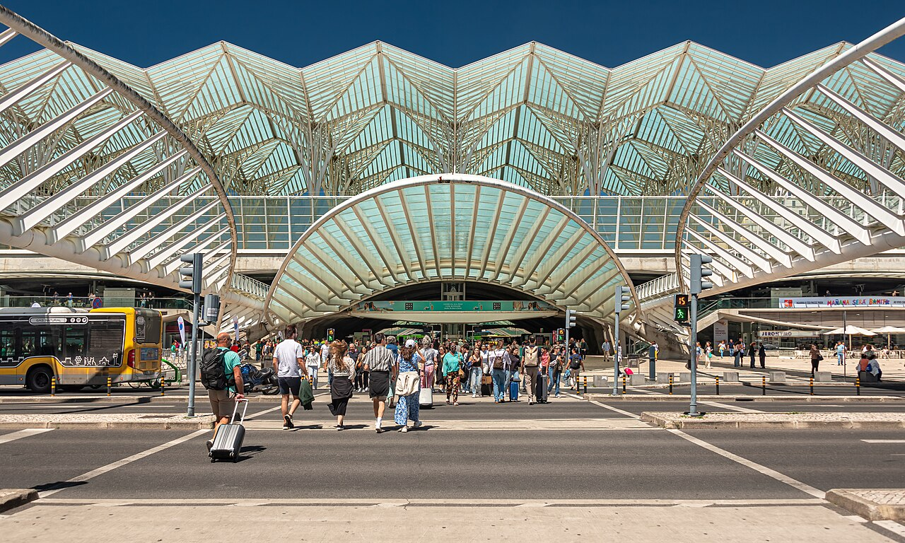
🚶 18 min · 🚕 5 min → Telecabine Lisboa
4. Telecabine Lisboa
↳ Gondola cable car running 1.25 km over the Expo '98 waterfront above the Tagus riverside. Cabins rise above the park rooftops giving unobstructed views of the Vasco da Gama Bridge and the wide Tagus estuary — the best aerial perspective of the whole Parque das Nações.
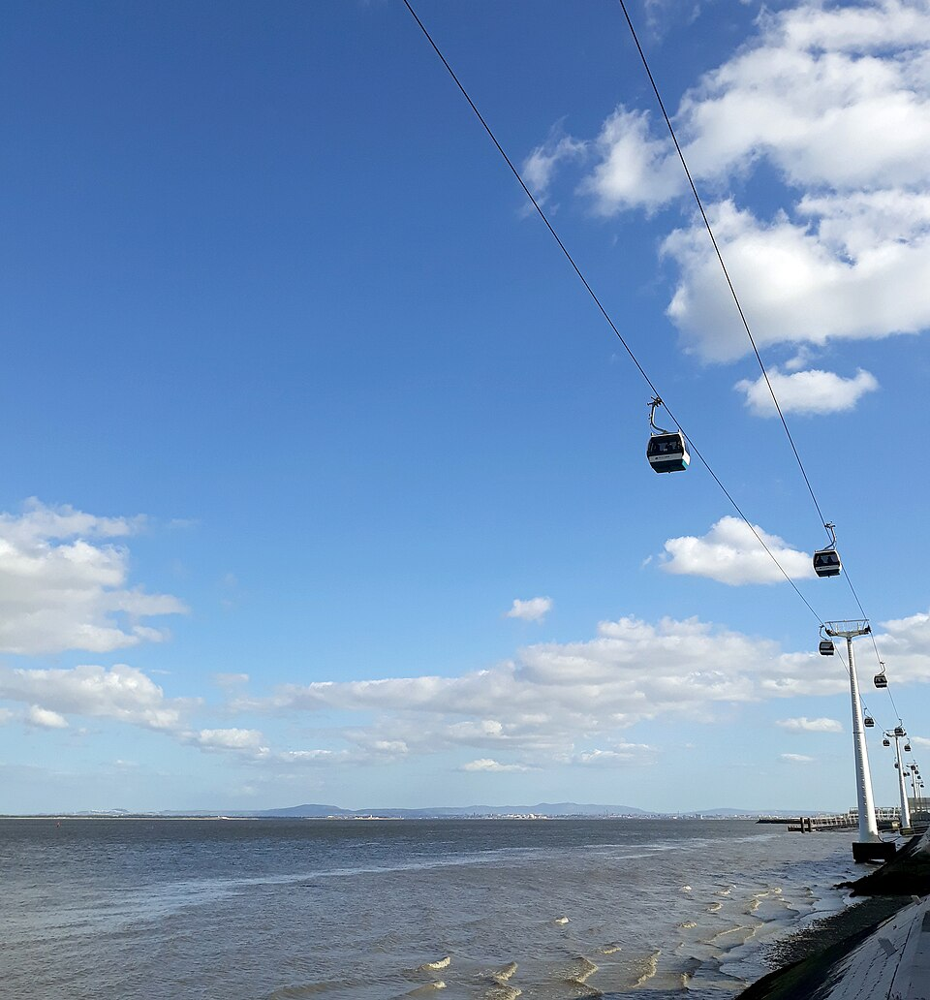
🚕 20 min → hotel
Day 6
🏨 From Hotel: 🚕 15 min → Cais do Sodré
1. Cais do Sodré
↳ Historic waterfront district anchored by the Mercado da Ribeira food hall and the neon-lit Pink Street. The ferry terminal connects to Cacilhas. Evenings: bars behind the market and wine bars on Rua Nova do Carvalho run until 2:00am.
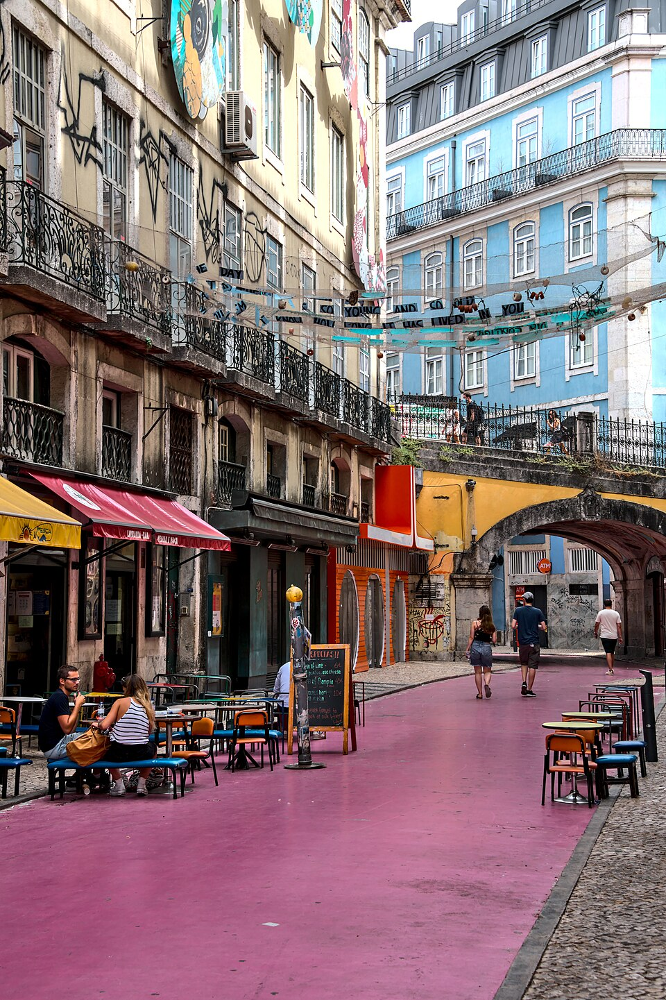
🚶 11 min · 🚕 7 min → Miradouro de Santa Catarina
2. Miradouro de Santa Catarina
↳ Bohemian hilltop viewpoint anchored by the Adamastor statue — the mythological sea giant from Camões' Os Lusíadas. Popular with locals at all hours; sunset brings guitars, wine, and commanding river views west toward the sea.
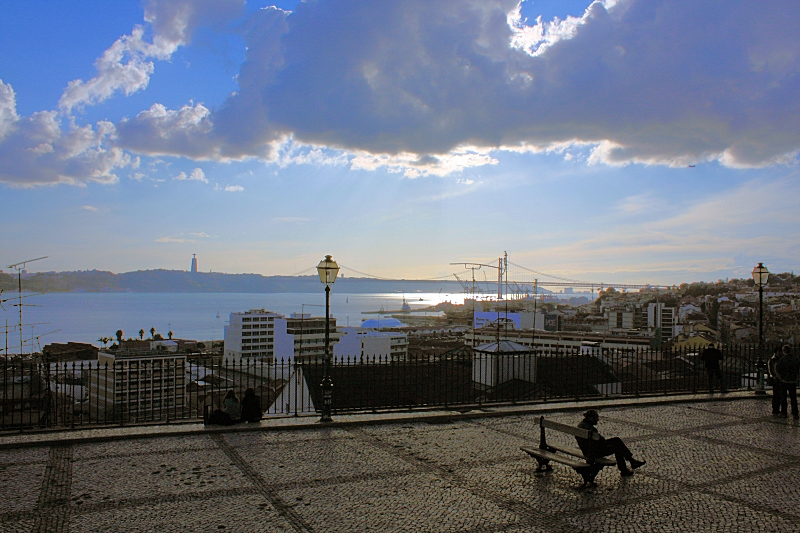
🚶 35 min · 🚕 8 min → LX Factory
3. LX Factory
↳ Creative hub in an 1846 textile factory beneath the Ponte 25 de Abril, repurposed with restaurants, boutiques, a design bookshop, and studios. Sunday's weekly market · 10:00am - 6:00pm draws the city's design and food crowd.
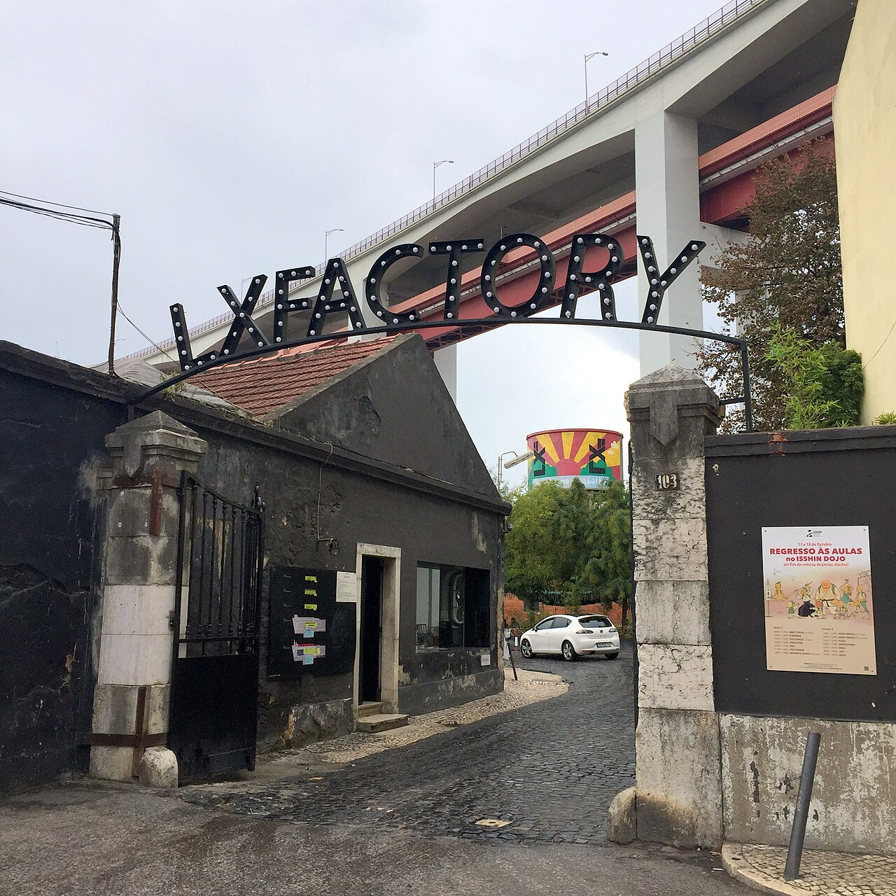
🚶 11 min · 🚕 6 min → Pilar 7
4. Pilar 7 — Bridge Experience
↳ Exhibition inside a Ponte 25 de Abril support pillar in Almada. A lift takes visitors to a glass deck 80 metres above the Tagus, with views of the bridge and the Christ the King statue. Museum covers construction history with photographs.
🏛️ Daily 10:00am - 6:00pm
⏰ ~1h
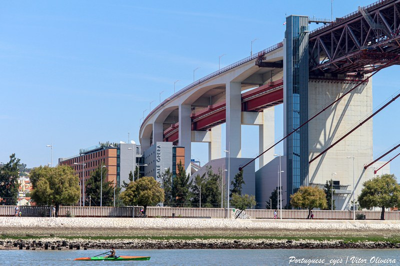
🚕 21 min → hotel
Day 7
🏨 From Hotel: 🚕 15 min → Museu Nacional do Azulejo
1. Museu Nacional do Azulejo
↳ Portugal's foremost azulejo museum in the former Madre de Deus Convent · founded 1509. Panels span the 15th century to the present. Highlight: a 23-metre baroque panel · c.1700 depicting Lisbon before the 1755 earthquake.
🏛️ Tuesday - Sunday 10:00am - 6:00pm
🚫 Closed Monday
⏰ ~2h
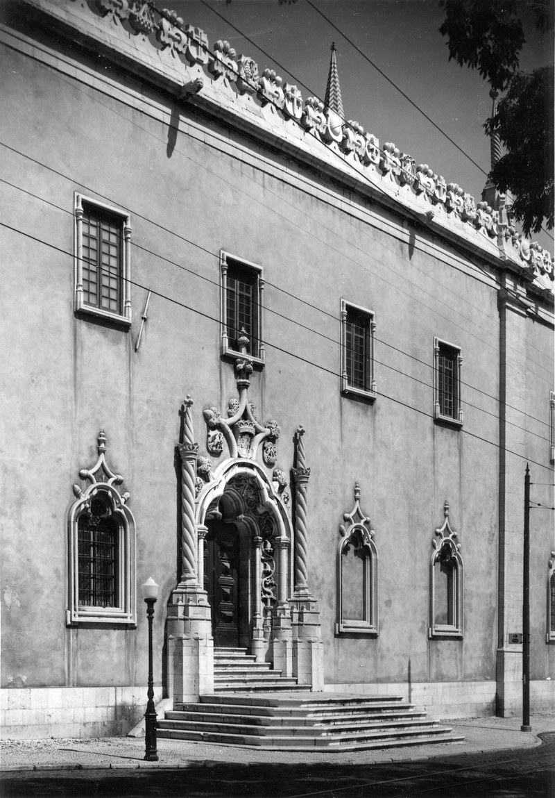
🚶 24 min · 🚕 10 min → Marvila
2. Marvila
↳ Eastern Lisbon's former industrial riverfront — 19th-century warehouses converted into artist studios, design spaces, and architecture firms running from the Beato convent along the Tagus docks. Raw brick, river light, almost no tourists: the most unhurried and photogenic corner of the city.
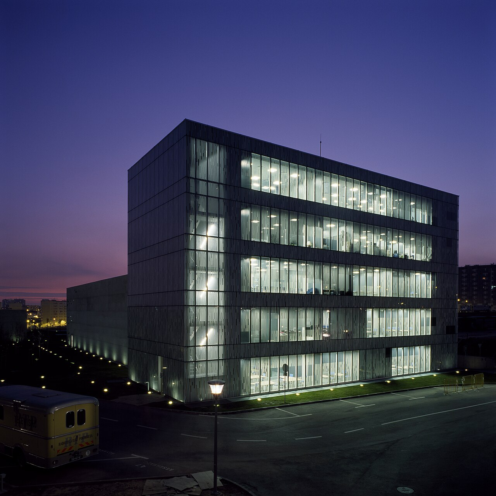
🚕 17 min → hotel
Day 8 – Train Day — Setúbal
🏨 From Hotel: 🚕 9 min → Lisboa Roma-Areeiro
🚊 Lisboa Roma-Areeiro → Setúbal · CP Sado Line · 50 min
🎫 book at: cp.pt
8:30am Roma-Areeiro → 9:20am Setúbal
9:00am Roma-Areeiro → 9:50am Setúbal
9:30am Roma-Areeiro → 10:20am Setúbal
10:00am Roma-Areeiro → 10:50am Setúbal
🚉 ARRIVE Setúbal: 🚶 8 min · 🚕 3 min → Setúbal city centre
1. Setúbal
↳ Historic port city 50 km south of Lisbon. The Convento de Jesus is one of Portugal's earliest Manueline buildings; Castelo de São Filipe overlooks the Sado estuary. Ferries to the Tróia peninsula depart from the marina.
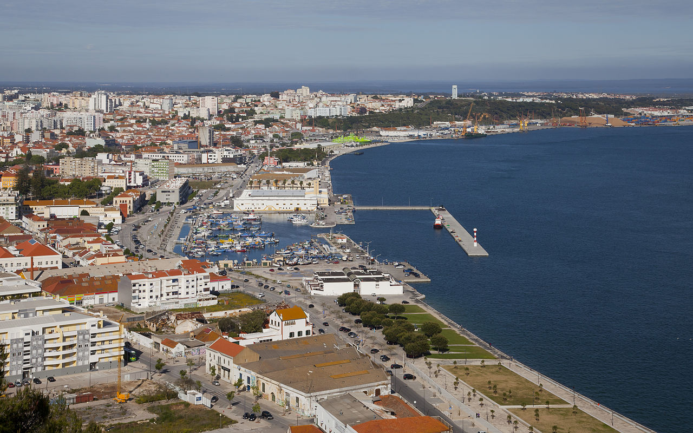
🚕 25 min → Portinho da Arrábida
2. Serra da Arrábida
↳ Protected natural park with Portugal's clearest water and most photogenic beaches. Portinho da Arrábida — a sheltered cove backed by limestone cliffs — is one of Portugal's Seven Natural Wonders, swimmable by late spring.

🚕 5 min → Setúbal station
🚊 Setúbal → Lisboa Roma-Areeiro · CP Sado Line · 50 min
🎫 book at: cp.pt
5:30pm Setúbal → 6:20pm Roma-Areeiro
6:30pm Setúbal → 7:20pm Roma-Areeiro
7:30pm Setúbal → 8:20pm Roma-Areeiro
8:30pm Setúbal → 9:20pm Roma-Areeiro
🚉 ARRIVE Lisboa Roma-Areeiro: 🚕 9 min → hotel
🗓️ Weekly Closures
Churches, Monasteries & National Museums · Closed Monday
Historic Convents · Closed Sunday
Contemporary Art Museums · Closed Tuesday
📅 Tours
Viator
↳ Tip-based stroll through Alfama's Moorish lanes — viewpoints, fado roots, tiled alleyways, and the stories behind the neighbourhood's medieval street pattern. Small group, local guide, no fixed price.
🕐 10:00am · ⏳ 2.5 hr · 👥 small group
🚕 15 min
↳ Small-group walk through Belém covering Jerónimos Monastery, the Discoveries Monument, and Torre de Belém — three UNESCO-level landmarks in one 3-hour guided morning. Meets at Praça do Império.
🕐 9:00am · ⏳ 3 hr · 👥 max 8
🚶 18 min · 🚕 22 min
↳ Hands-on azulejo tile-painting workshop at the National Tile Museum entrance — learn the historic technique used in Lisbon's iconic panels, create your own tile to take home. 4-hour guided session.
🕐 9:00am · ⏳ 4 hr · 👥 small group
🚕 15 min
↳ Full-day small-group day trip from Lisbon covering Pena Palace, Quinta da Regaleira, Cabo da Roca — mainland Europe's westernmost point — and Cascais. Five major sites in one guided 8-hour circuit by minivan.
🕐 8:00am · ⏳ 8 hr · 👥 small group
🚕 13 min
↳ Full-day small-group minivan tour hitting Alfama, Belém, Castelo de São Jorge, and Parque das Nações — a driver-guide covers all major districts without the legwork. Just 8 passengers per van.
🕐 9:00am · ⏳ 7 hr · 👥 max 8
🚕 15 min
GetYourGuide
📅 1. Tiles and Tales: Full-Day Tile Workshop and National Tile Museum · GetYourGuide · 4.9⭐ · 20+ reviews
↳ Full 8-hour immersion in Lisbon's azulejo tradition — hands-on tile workshop plus a guided tour of the National Tile Museum collections. Central pickup near Marquês de Pombal. Small group.
🕐 9:00am · ⏳ 8 hr · 👥 small group
🚕 10 min
↳ 3-hour introduction to Lisbon covering Rossio Square, Chiado's literary cafes, and Alfama's Moorish lanes — a single loop hitting the city's three most character-rich neighbourhoods. Meets at Rossio Square.
🕐 10:00am · ⏳ 3 hr · 👥 small group
🚕 14 min
↳ Full-day small-group tour by minivan from Lisbon covering Pena Palace, the Castle of the Moors, Cabo da Roca — Europe's westernmost point — and the seaside town of Cascais. Max 8 people.
🕐 8:30am · ⏳ 8 hr · 👥 max 8
🚕 12 min
📅 4. Lisbon Half-Day Small-Group Guided Tour with Transportation · GetYourGuide · 4.8⭐ · 400+ reviews
↳ Half-day minivan tour of Lisbon hitting Alfama, Belém, Parque das Nações, and the city's main miradouros with a live guide — efficient overview of all major districts without walking fatigue. Max 8 people.
🕐 9:00am · ⏳ 4 hr · 👥 max 8
🚕 12 min
📅 5. Lisbon · History · Hidden Gems and Cristo Rei Full-Day Tour · GetYourGuide · 4.8⭐ · 300+ reviews
↳ Full-day small-group van tour of Lisbon crossing to Cristo Rei for a 360° panoramic view of the city, visiting Alfama, Belém Tower, Jerónimos Monastery, and secret alleys most tourists miss. Pastel de Belém tasting included.
🕐 9:00am · ⏳ 8 hr · 👥 small group
🚕 10 min
TripAdvisor
↳ Food and fado combination tour through Mouraria and Alfama — tastings at local tascas paired with the story of fado's origins in these two neighbourhoods. Small group. Morning or evening options.
🕐 10:00am · ⏳ 3 hr · 👥 small group
🚕 14 min
↳ Cultural walking tour through Alfama combining fado history and live fado music at an intimate venue — covers the neighbourhood's Moorish origins, fado houses, and castle-hill miradouros.
🕐 10:00am · ⏳ 3 hr · 👥 small group
🚕 15 min
↳ Highly-reviewed 3-hour food and wine walk through Baixa and Chiado — 15+ tastings of Portuguese dishes and wines at historic venues, including pastel de nata, petiscos, and local wines. Meets at Rossio.
🕐 10:00am · ⏳ 3 hr · 👥 small group
🚕 14 min
📅 4. Lisbon Small-Group Sightseeing City Tour with Transportation · TripAdvisor · 4.8⭐ · 322+ reviews
↳ Full-day small-group minivan tour covering Castelo de São Jorge, Jerónimos Monastery, Belém Tower, Alfama, and Parque das Nações — door-to-door transfers from central Lisbon, max 16 people, driver-guide.
🕐 8:00am · ⏳ 7 hr · 👥 max 16
🚕 13 min
↳ Small-group full-day day trip to Sintra and Cascais — guided tour of Pena Palace, free time in Sintra's historic centre, stop at Cabo da Roca and Cascais. Air-conditioned minivan, max 8 people.
🕐 8:30am · ⏳ 8 hr · 👥 max 8
🚕 14 min
☕ Cappuccino
SoLo Brewing Coffee Lab · 4.7⭐ · 500+ reviews
🏛️ Monday - Saturday 9:00am - 5:00pm · Sunday 10:00am - 4:00pm
🚶 21 min · 🚕 4 min
Shakar · 4.6⭐ · 1000+ reviews
Tomorrow at 9 · 4.5⭐ · 200+ reviews
Hygge Kaffe · 4.7⭐ · 5000+ reviews
Simpli Coffee · 4.5⭐ · 500+ reviews
🫕 Restaurants Near Hotel
Provincia · Saldanha · 4.3⭐ · 500+ reviews
↳ Portuguese comfort food — petiscos, grilled dishes, regional flavors.
🏛️ Daily 12:00pm - 11:30pm
🚶 21 min · 🚕 4 min
Sangiovese · Saldanha · 4.4⭐ · 1000+ reviews
↳ Italian-Mediterranean — burrata, housemade pasta, truffles, natural wine.
🏛️ Monday - Saturday 12:00pm - 3:00pm · 7:00pm - 11:00pm
🚫 Closed Sunday
🚶 22 min · 🚕 4 min
O Talho de Kiko Martins · Saldanha · 4.3⭐ · 1000+ reviews
↳ Contemporary Portuguese — artisan butcher-concept steakhouse.
🏛️ Daily 12:00pm - 4:00pm · 7:00pm - 11:30pm
🚶 24 min · 🚕 4 min
Gurkha Saldanha · 4.8⭐ · 1000+ reviews
↳ Nepalese & Indian — clay-pot curries, tandoor, spice-forward.
🏛️ Daily 12:00pm - 3:00pm · 7:00pm - 11:00pm
🚶 25 min · 🚕 5 min
Tozzi Forneria Moderna · Saldanha · 4.8⭐ · 500+ reviews
↳ Neapolitan pizza — wood-fired, Italian breads, pastry.
🏛️ Tuesday - Saturday 12:00pm - 3:00pm · 6:00pm - 10:30pm
🏛️ Sunday 12:00pm - 3:00pm · 6:00pm - 10:00pm
🚫 Closed Monday
🚶 25 min · 🚕 5 min
🍮 Local Tastes
Pastéis De Nata
↳ The Portuguese custard tart — flaky, blistered pastry shell, scorched cinnamon-dusted egg-yolk custard inside. Invented at the Jerónimos Monastery before the 18th century; the original recipe is still made by a handful of master bakers.
Ginjinha
↳ Sour-cherry liqueur, served in tiny shot glasses · with or without a soaked cherry at the bottom. Small Lisbon ginjinha bars are a stand-up-and-go institution — you order, drink at the counter, leave.
🎭 Shows, Performances & Concerts
Clube de Fado
↳ Classic fado house in Alfama — intimate stage, live guitarra portuguesa, some of Lisbon's finest voices since 1990.
🚕 25 min
Casa de Linhares
↳ Fado in a 16th-century palace in Alfama — hand-painted azulejos, intimate room, traditional performers nightly.
🚕 25 min
🚌 Getting Around
🚕 Uber
🚕 Bolt
🚎 Tram
↳ 28E · Alfama to Estrela. 15E · Cais do Sodré to Belém. Buy at stop.
Lisbon has a tram system — operated by Carris. No tram rides on this trip.
🚝 Metro
↳ Blue, Yellow, Green, Red · 4 lines. Nearest: Cidade Universitária, 2 min.
Lisbon has a metro — operated by Metropolitano de Lisboa. Lines: 4. Pay with Viva Viagem card.
🚆 Train Stations Near Hotel
🚊 Sete Rios Station
CP Intercity Regional → Sintra, Cascais, Alentejo · Alfa Pendular connection hub.
🚶 7 min · 🚕 3 min
⛲️ Day Trips by Train
Queluz · 25 min
↳ 18th-century rococo palace — Portugal's "Versailles" — with ornate state rooms, formal gardens, and the original palace kitchen. The quickest palace day trip on the CP network.
Sintra · 40 min
↳ UNESCO World Heritage mountain village with palaces embedded in forest — Pena Palace · fairytale Gothic-Romantic hilltop, the Moorish Castle, Quinta da Regaleira · esoteric gardens and initiation well. The most worth doing of all the day trips; go early to beat the crowds.
Cascais · 40 min
↳ Elegant coastal town at the mouth of the Tagus — Atlantic seafront promenade, the Boca do Inferno sea-cave viewpoint, the old fishing quarter, and the best esplanade lunch spots on the Lisbon coast. Relaxed and easy — a complete contrast to Lisbon's hills.
Santarém · 48 min
↳ The Gothic capital of Portugal — a walled hilltop city above the Tagus floodplain with a remarkable concentration of Manueline and Gothic churches; views at the Portas do Sol terrace across the river plains are some of the finest in the country.
Évora · 1 hr 20 min
⭐ Michelin Restaurants
⭐⭐ Alma
↳ Portuguese · Chef Henrique Sá Pessoa · modern takes on traditional flavors.
🚕 16 min
⭐⭐ Belcanto
⭐ Eleven
↳ French-Portuguese · Chef Joachim Koerper · panoramic Parque Eduardo VII views.
🚶 34 min · 🚕 8 min
⭐ EPUR
↳ French Contemporary · Chef Vincent Farges · product-driven tasting menus.
🚕 15 min